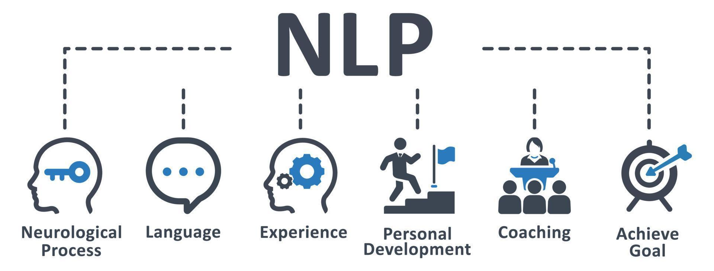

NLP Introduction
Natural Language Processing (NLP)is an interdisciplinary field combining computer science, artificial intelligence, and linguistics, dedicated to enabling computers to understand, process, and generate human natural language.
Core Objectives:
- Understanding: enabling computers to understand the meaning of human language
- Processing: analyzing, transforming, and manipulating text and speech
- Generation: enabling computers to produce natural, fluent human language

Characteristics of Natural Language
Human language has the following unique characteristics, which make NLP a highly challenging field:
1. Ambiguity
- Lexical Ambiguity: a word has multiple meanings
- Example: "bank" can refer to a financial institution or a riverbank
- Syntactic Ambiguity: the grammatical structure of a sentence can have multiple interpretations
- Example: "I saw the person with the telescope" (is the person holding the telescope, or did I use the telescope to see the person?)
- Semantic Ambiguity: the overall meaning of the sentence is unclear
- Example: "They bought apples" (is it the fruit or Apple Inc.'s products?)
2. Context Dependency
- The same word or sentence has different meanings in different contexts
- Example: "cool" in "This idea is very cool" means great, while "It's cool today" means cool (temperature)
3. Innovation and Variability
- Language is constantly evolving, with new vocabulary and new expressions emerging one after another
- Rapid spread of internet slang and catchphrases
- Example: from "给力" (geili/awesome) to "yyds" (永远的神, meaning "eternal god")
4. Cultural and Social Background
- Language carries profound cultural connotations
- The same language has dialect differences in different regions
- Example: In Chinese, "吃了吗?" (Have you eaten?) is not just a question but also a form of greeting
5. Non-standardization
- Colloquial expressions, abbreviations, typos
- Non-standard grammar, incomplete sentences
- Example: informal expressions in Weibo and chat records
Core Tasks of NLP
1. Basic Tasks
- Tokenization: breaking text into meaningful units
- Part-of-Speech Tagging (POS Tagging): identifying the grammatical category of each word
- Syntactic Parsing (Parsing): analyzing the grammatical structure of sentences
- Named Entity Recognition (NER): identifying person names, place names, organization names, etc.
2. Understanding Tasks
- Semantic Role Labeling: identifying semantic relationships in sentences
- Coreference Resolution: determining different expressions in text that refer to the same entity
- Relation Extraction: identifying semantic relationships between entities
- Event Extraction: extracting event information from text
3. Application Tasks
- Text Classification: categorizing text into predefined categories
- Sentiment Analysis: determining the sentiment tendency of text
- Machine Translation: translating from one language to another
- Text Summarization: generating concise summaries of text
- Question Answering Systems: retrieving or generating answers based on questions

The Development History of NLP
Phase 1: The Era of Rule-Based Methods (1950s-1980s)
Characteristics:
- Based on manually formulated grammatical rules and knowledge bases
- Expert system methods were dominant
- Limited processing capabilities, but performed well in specific domains
Representative Work:
- 1950- The Turing Test was proposed, laying the foundation for machine intelligence evaluation
- 1954- The Georgetown-IBM experiment, the first machine translation attempt
- 1960s- The ELIZA chatbot, using pattern matching technology
- 1970s- The development of parsers, such as ATN (Augmented Transition Network)
Typical Systems:
- SHRDLU（1970）: understanding and executing natural language commands in the blocks world
- LUNAR（1972）: answering questions about moon rocks
Limitations:
- Limited rule coverage, making it difficult to handle the complexity of language
- High maintenance costs and poor scalability
- Unable to handle ambiguity and exceptional cases well
Phase 2: The Era of Statistical Methods (1980s-2010s)
Characteristics:
- Statistical learning methods based on large-scale corpora
- Widespread application of machine learning algorithms
- Data-driven methodology
Key Technology Developments:
1980s-1990s: The Rise of Statistical Methods
- Hidden Markov Models (HMM): used for part-of-speech tagging and speech recognition
- Probabilistic Context-Free Grammars (PCFG): used for syntactic parsing
- Statistical Machine Translation: based on phrase and sentence alignment
2000s: The Maturation of Machine Learning Methods
- Support Vector Machines (SVM): excellent performance in text classification
- Conditional Random Fields (CRF): used for sequence labeling tasks
- Naive Bayes: a simple and effective classification method
- Maximum Entropy Models: handling multi-feature problems
Important Milestones:
- 1988- The Brown Corpus was released, advancing the development of statistical NLP
- 1993- The Penn Treebank was released, providing standard data for syntactic parsing
- 2000- WordNet was released, providing a large-scale lexical semantic network
- 2005- Google released a statistical machine translation system
Advantages:
- Capable of handling large-scale real-world text
- Has a certain degree of generalization ability
- Can automatically learn patterns from data
Limitations:
- Requires large amounts of annotated data
- Heavy feature engineering workload
- Difficult to capture deep semantic information
Phase 3: The Era of Deep Learning (2010s-2020s)
Characteristics:
- The revival and development of neural network models
- End-to-end learning methods
- Breakthroughs in representation learning
Key Technology Developments:
Early 2010s: The Revival of Neural Networks
- 2010- The application of Recurrent Neural Networks (RNN) in language modeling
- 2013- Word2Vec was released, a breakthrough in word vector representations
- 2014- Sequence-to-Sequence models, a revolution in machine translation
Mid-2010s: The Attention Mechanism
- 2015- The proposal and application of the attention mechanism
- 2016- Neural machine translation reached a practical level
- 2017- The Transformer architecture was released, "Attention is All You Need"
Late 2010s: Pre-trained models
- 2018- BERT released, a breakthrough in bidirectional pre-training
- 2019- GPT-2 released, large-scale generative model
- 2020- GPT-3 released, demonstrating astonishing language capabilities
Key breakthroughs:
- Word vector technology：Word2Vec, GloVe, FastText
- Sequence models: LSTM, GRU, bidirectional RNN
- Attention mechanism: solves long-sequence dependency problems
- Transformer architecture: parallelized training, significantly improved performance
- Pre-trained models: BERT, GPT series, general language understanding
Phase 4: The Era of Large Language Models (2020s-present)
Characteristics:
- Rapid growth in model scale
- The dawn of general artificial intelligence
- Few-shot and zero-shot learning capabilities
Key developments:
- 2020- GPT-3 (175 billion parameters) demonstrated strong few-shot learning capabilities
- 2021- PaLM (540 billion parameters) reached new heights on multiple tasks
- 2022- ChatGPT released, sparking an AI application boom
- 2023- GPT-4 released, significantly improved multimodal capabilities
- 2024 to present- Rise of competitors such as Claude and Gemini
Technical characteristics:
- Scale effects: model parameter counts grew from hundreds of millions to trillions
- Emergent abilities: models exhibit unexpected abilities after reaching a certain scale
- Multimodal fusion: unified processing of text, images, and audio
- Instruction following: improving model controllability via instruction fine-tuning
Main Application Areas of NLP

Machine Translation
Development history:
- Statistical Machine Translation (SMT): based on phrase alignment and statistical models
- Neural Machine Translation (NMT): end-to-end neural network approaches
- Large-model translation: translation capabilities demonstrated by large models like GPT-3/4
Technical challenges:
- Differences between language pairs
- Context understanding and preservation
- Terminology translation in specialized domains
- Language style and cultural adaptation
Application examples:
- Google Translate, Baidu Translate
- Real-time speech translation
- Document translation services
- Cross-lingual information retrieval
Search Engines and Information Retrieval
Core technologies:
- Query understanding: understanding user search intent
- Document ranking: ranking search results by relevance
- Semantic matching: semantic similarity computation beyond keywords
- Personalized recommendation: based on user history and preferences
Technological development:
- From keyword matching to semantic understanding
- From static ranking to dynamic personalization
- From text search to multimodal search
Representative systems:
- RankBrain algorithm in Google Search
- Baidu's ERNIE applied in search
- Bing Chat's conversational search
Intelligent Customer Service and Dialogue Systems
System types:
- Task-oriented: completing specific tasks (booking tickets, queries, etc.)
- Chit-chat: engaging in open-domain conversation
- Hybrid: combining task completion and chit-chat functions
Key technologies:
- Intent recognition: understanding the user's true intent
- Slot filling: extracting key task-related information
- Dialogue management: controlling dialogue flow and state
- Response generation: generating natural and relevant responses
Application scenarios:
- Intelligent customer service in banking and e-commerce
- Smart speakers (Alexa, Siri)
- Chatbots
- Virtual assistants
Text Analysis and Sentiment Analysis
Text analysis tasks:
- Topic classification: classifying documents into topic categories
- Keyword extraction: identifying core vocabulary of documents
- Text clustering: grouping similar documents
- Trend analysis: analyzing temporal changes in text content
Levels of sentiment analysis:
- Document level: overall sentiment of an entire document
- Sentence level: sentiment orientation of each sentence
- Aspect level: sentiment toward specific aspects
- Fine-grained: intensity and complexity of sentiment
Business applications:
- Social media monitoring
- Product review analysis
- Brand reputation management
- Stock market sentiment indicators
Information Extraction
Extraction tasks:
- Named entity recognition: person names, place names, organization names, etc.
- Relation extraction: semantic relations between entities
- Event extraction: participants, time, location, etc. of events
- Attribute extraction: characteristic attributes of entities
Technical approaches:
- Rule-based pattern matching
- Supervised learning methods
- Distant supervision and weak supervision
- Fine-tuning pre-trained models
Application value:
- Knowledge graph construction
- Intelligent question answering systems
- News event monitoring
- Financial risk analysis
Automatic Summarization
Summarization types:
- Extractive summarization: selecting important sentences from the original text
- Abstractive summarization: generating new summary text
- Hybrid summarization: combining extractive and generative methods
Technical challenges:
- Identification of important information
- Coherence and readability of summaries
- Consistency in multi-document summarization
- Control of summary length
Application scenarios:
- News summarization
- Academic paper abstracts
- Legal document summarization
- Meeting minutes generation
Main Challenges Facing NLP
Ambiguity of Language
Lexical Ambiguity
- Polysemy：
- "打" (dǎ): hit, buy, turn on, etc.
- "行" (xíng/háng): okay / bank / walk, etc.
- Homophones：
- Chinese: usage of "的, 地, 得"
- English: "there, their, they're"
Syntactic Ambiguity
- Unclear modification relationships：
- "美丽的花儿的香味" (Is the flower beautiful or the fragrance beautiful?)
- Multiple structural analyses：
- "我看见了拿着雨伞的女孩" (I saw the girl holding an umbrella)
Semantic Ambiguity
- Unclear reference：
- "李明对张华说他很聪明" (Who is smart?)
- Scope ambiguity：
- "所有学生都不喜欢这个老师" (All students don't like this teacher)
Solutions:
- Utilization of contextual information
- Probabilistic judgment of language models
- Assistance from knowledge bases
- Multi-task learning
Context Understanding
Local context
- Semantic dependencies within a sentence
- Understanding of phrases and clauses
- Semantic relations between words
Global context
- Semantic coherence at paragraph and document level
- Topic continuity
- Long-distance semantic dependencies
Dialogue context
- Historical information in multi-turn dialogue
- Reasoning about implicit information
- Evolution of dialogue intent
Technical challenges:
- Long-distance dependenciesTraditional RNNs struggle to handle long sequences
- Semantic coherenceMaintaining logical consistency in generated text
- Common sense reasoningRequires extensive background knowledge
Solutions:
- Attention mechanisms and Transformers
- Pre-trained language models
- Knowledge-enhanced models
- Multimodal information fusion
Cultural and Language Differences
Cross-lingual challenges
- Language family differences：
- Sino-Tibetan vs Indo-European
- Rich morphology vs word order importance
- Writing system differences：
- Different character set sizes
- Different tokenization methods
Cultural background
- Idioms and colloquialisms：
- "Painting a snake with legs" vs "don't count your chickens before they hatch"
- Culture-specific expressions：
- The Chinese concept of "face" (mianzi)
- Japanese honorific system
Sociolinguistic factors
- Dialectal differences：
- Mandarin vs various regional dialects
- Standard English vs dialectal English
- Register variation：
- Formal vs informal language styles
- Spoken vs written language
Solution strategies:
- Multilingual pre-trained models
- Cross-lingual transfer learning
- Cultural adaptation
- Localized data collection
Data Scarcity Issues
Low-resource languages
- There are over 7,000 languages worldwide, but only a few have abundant digital resources
- Preservation and research of endangered languages
- Dialects and minority languages
Professional domains
- Terminology in specialised fields such as medicine and law
- Industry-specific expressions
- Difficulty obtaining annotated data
Emerging fields
- New vocabulary generated by new technologies
- New expressions on social media
- New forms of cross-cultural communication
Evolution over time
- Historical changes in language
- Rapid emergence of new words
- Gradual semantic shifts
Solutions:
- Transfer learning: Transferring from high-resource to low-resource languages
- Data augmentation: Expanding training data through various techniques
- Few-shot learning: Rapid adaptation with a small number of samples
- Unsupervised and self-supervised learning: Reducing reliance on annotated data
- Crowdsourced annotation: Using collective intelligence to collect data
- Synthetic data: Generating training data through rules or models
Computational Complexity
Model scale challenges
- Explosive growth in parameter count (GPT-3: 175 billion parameters)
- Rapidly rising training costs
- Inference latency and resource consumption
Real-time requirements
- Millisecond-level responses for search engines
- Real-time interaction in dialogue systems
- Resource constraints on mobile devices
Scalability issues
- Handling massive user requests
- Unified processing of multiple languages and tasks
- Computational demands of personalised services
Evaluation and Quantification Challenges
Subjectivity issues
- Subjective judgment of text quality
- Cultural differences in translation quality
- Evaluation criteria for creative writing
Limitations of evaluation metrics
- Imperfections in metrics such as BLEU and ROUGE
- Differences between automatic evaluation and human evaluation
- Complexity of multi-dimensional evaluation
Benchmark datasets
- Representativeness of datasets
- Gap between evaluation tasks and real-world applications
- Timeliness and updates of datasets
Summary and Outlook
Natural language processing, as a core branch of artificial intelligence, has gone through a development process from rule-driven to data-driven, and then to large-model-led. Each stage has its unique technical characteristics and historical contributions.
Current status:
- Large language models demonstrate astonishing language understanding and generation capabilities
- Multimodal fusion becomes a new development direction
- Application areas continue to expand, and commercial value is increasingly prominent
Future trends:
- Artificial general intelligence: Towards more general and intelligent AI systems
- Multimodal fusion: Comprehensive integration of text, vision, and audio
- Personalised services: More precise personalised language understanding and generation
- Explainability: Improving the transparency of model decision-making processes
- Efficiency optimisation: Reducing computational costs while maintaining performance
- Ethics and safety: Ensuring the fairness, safety, and controllability of AI systems
Learning suggestions:
For NLP learners, it is recommended to:
- Solid foundation: Deeply understand the fundamentals of linguistics and computer science
- Practice-oriented: Deepen understanding through project practice
- Track frontiers: Pay attention to the latest technological developments and research trends
- Interdisciplinary thinking: Combine knowledge from linguistics, psychology, sociology, and other disciplines
- Engineering capability: Cultivate the ability to translate research results into practical applications
The future of natural language processing is full of opportunities and challenges. With continuous technological progress, we have reason to believe that the ability of machines to understand and generate human language will continue to improve, bringing more convenience and value to human society.
Additional extensions
Click to Share Notes
<p style="font-size:14px;">Notes must be an extension of the content of this article!</p><br> <p style="font-size:12px;"><a href="../tougao.html" target="_blank">For article submission, click here</a></p> <p style="font-size:14px;"><a href="../w3cnote/runoob-user-test-intro.html" target="_blank">How to get a registration invitation code</a></p> <h3 class="text-muted"><i class="fa fa-info-circle" aria-hidden="true"></i> Before sharing notes, you must <a href=";.html" class="runoob-pop">log in</a>!</h3> <p><a href="../w3cnote/runoob-user-test-intro.html" target="_blank">How to get a registration invitation code</a></p>